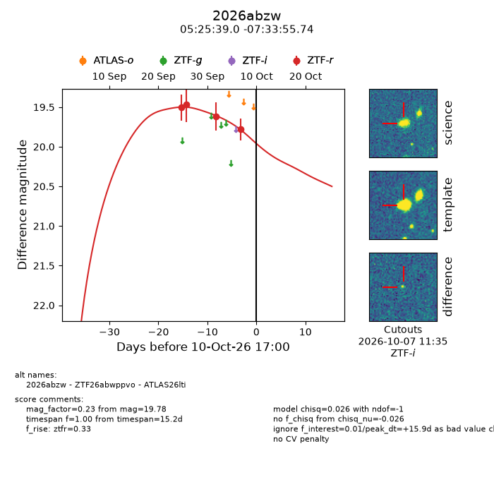
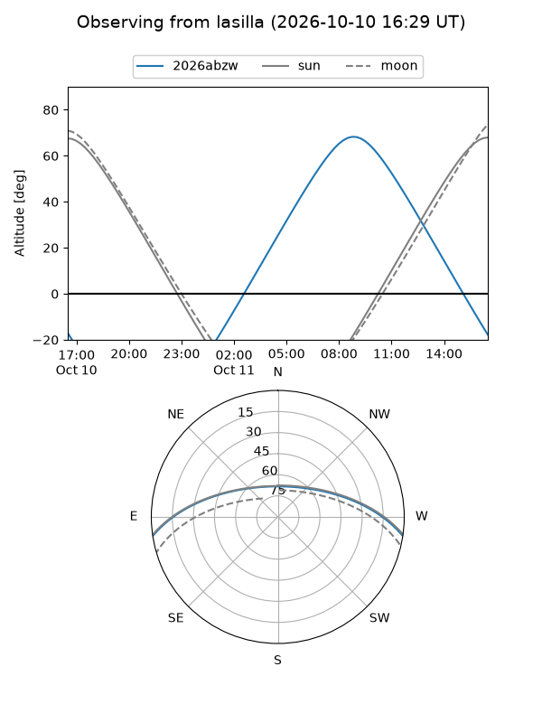
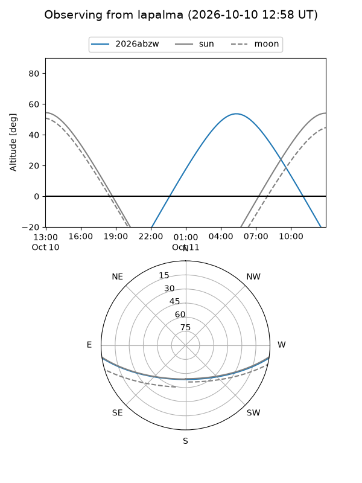
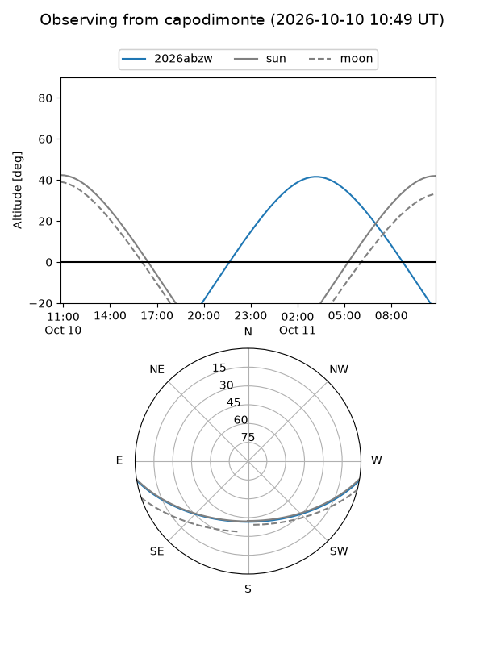
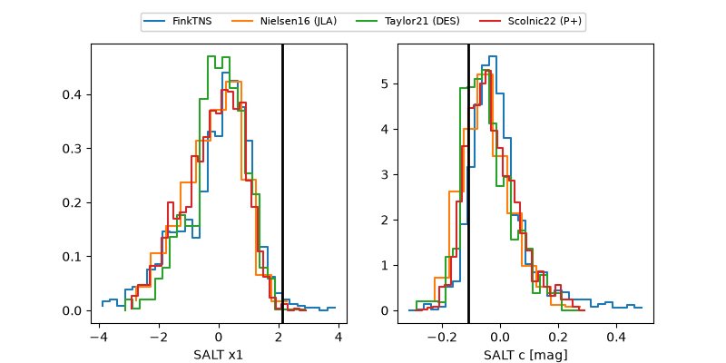

2026abzw
Target 2026abzw at 2026-10-10 17:01
Aliases and brokers:
FINK-ZTF: ztf.fink-portal.org/ZTF26abwppvo
Lasair-ZTF: lasair-ztf.lsst.ac.uk/objects/ZTF26abwppvo
ALeRCE-ZTF: alerce.online/object/ZTF26abwppvo
YSE-PZ: ziggy.ucolick.org/yse/transient_detail/2026abzw
TNS name: wis-tns.org/object/2026abzw
Direct TNS query: direct search
alt names
ZTF26abwppvo (ztf,fink_ztf)
2026abzw (tns,yse)
ATLAS26lti (atlas)
Coordinates:
equatorial (ra, dec) = 81.4127,-7.56548
equatorial (HMS+DMS) = 05:25:39.05,-07:33:55.74
galactic (l, b) = (209.9478,-22.49570)
Flags:
peak dt: +15.9
Photometry:
last ztfr=19.78
4 ztfr detections
Lightcurve

Visibility



Additional plots
